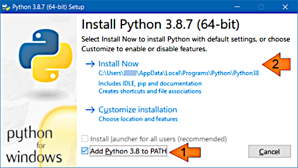

Installation
Installation
Installation
This program doesn't have any installer and is installed according to the principle unpack-and-run:
md2html to the directory by choice.MD2HTML_HOME environment variable as the absolute path of the directory md2html.Tip
After the program is installed, before further reading, you may go here for a quick instruction on a simple project creation.
This program requires Python 3 runtime that can be installed in
different ways. Here is a short instruction for a typical installation on Windows. The installer
file name is python-3.8.7-amd64.exe (or choose the other one applicable to your platform).
Only the following option (1) must be changed:

Nothing else should be changed in this and the subsequent dialogues.
The following command may be used to check whether Python is installed.
>python --version
Python 3.8.7Notes
python command is probably used for running Python 2 that does not suffice
for this program. Python 3 may need to be installed separately and called with
command python3.The following Python packages must be installed:
>python -m pip install markdown==3.3.4 markdown-emdash==0.1.0 pymdown-extensions==8.2 jsonschema==3.2.0 chevron==0.14.0Note
The packages are specified with their versions for stability reason. Future versions of the packages may have changes that noticeably affect the program work.
Here's how the Python version may be installed:
Java runtime (JRE) 8 or higher. The following command may be used to check whether Java is installed.
>java -version
java version "1.8.0_05"
. . .Here's how the Java version may be installed:
Unlike the Python version, the Java version in this distribution doesn't contain the executable artifacts. They must be built or taken separately.
The latest built release must be available along with the source code. A release is a file named
md2html-bin.jar. Download this file and put it inside the directory
%MD2HTML_HOME%\java\target\ (create this directory if it does not exist). That's it.
This needs Java Development Kit (JDK, not JRE) 8 or higher and Maven.
In a command line terminal execute:
>cd %MD2HTML_HOME%\java
>release.batThe following must be output as the process ends:
[INFO] ------------------------------------------------------------------------
[INFO] BUILD SUCCESS
[INFO] ------------------------------------------------------------------------File md2html-bin.jar must appear in the directory %MD2HTML_HOME%\java\target\.
Note
Note. The tests and the whole build will fail if the variable
MD2HTML_HOME is not set.